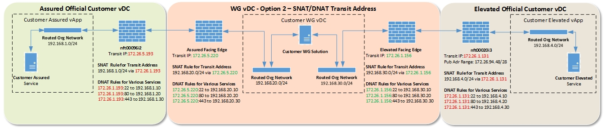

UKCloud Limited (“UKC”) and Virtual Infrastructure Group Limited (“VIG”) (together “the Companies”) – in Compulsory Liquidation
On 25 October 2022, the Companies were placed into Liquidation with the Official Receiver appointed as Liquidator and J Robinson and A M Hudson simultaneously appointed as Special Managers to manage the liquidation process on behalf of the Official Receiver.
Further information regarding the Liquidations can be found here: https://www.gov.uk/government/news/virtual-infrastructure-group-limited-and-ukcloud-limited-information-for-creditors-and-interested-parties
Contact details:
For any general queries relating to the Liquidations please email ukcloud@uk.ey.com
For customer related queries please email ukcloudcustomers@uk.ey.com
For supplier related queries please email ukcloudsuppliers@uk.ey.com
Getting Started Guide for the Cross Domain Security Zone
Overview
The UKCloud Walled Garden provides self-service access to the Cross Domain Security Zone (CDSZ) so that you can design, implement and manage a cross‑domain solution, using technology and application services of your choice. UKCloud provides support and guidance in the design of the CDSZ architecture; it's your responsibility to build, manage and ensure you use appropriate risk management to understand and mitigate identified risks.
The Walled Garden is ideal if you require control and flexibility over what is passed between security domains, to support a wider range of use cases.
This article covers the steps you need to follow to get your Walled Garden up and running.
Intended audience
This article is intended for customers who have completed the UKCloud Cross Domain Security Zone application process.
Before you begin
Before you can start to implement a Walled Garden, you must have completed and passed the appropriate application process. For more information, see the UKCloud Cross Domain Security Zone application process.
After your Walled Garden application has been approved, we'll raise a service request to implement the Walled Garden virtual data centre (VDC) and, if necessary, Elevated and Assured VDCs.
Note
If a service request for this implementation already exists, we'll use the existing request rather than rasie a new one.
You can track the progress of the service request in the My Calls section of the UKCloud Portal.
During the provisioning of the Walled Garden service, we'll ask you for some additional information via the service request:
The customer account in which you'd like the Walled Garden VDC to be provisioned. If this is different from the customer completing the Walled Garden application we must see written conformation from the customer to validate they're happy for the provisioning to take place.
Whether you plan to have a single or dual site solution.
How many VDCs you need to be set up in each security domain.
If you're connecting new or existing VDCs to the Walled Garden VDC.
- If you're connecting to existing VDCs, we'll need to know information such as network details and customer account.
The build phase of the Walled Garden environment can take up to 10 working days depending on the complexity of the deployment. When we've fully provisioned the environment, your Service Delivery Manager (SDM) will send you the information you need to access it.
Building your Walled Garden service
As soon as you have access to your environment, you can start to build your Walled Garden services.
It's important to remember that while the UKCloud Portal for the Assured security domain is accessible from the internet, the Portal for the Elevated security domain and Walled Garden services is accessible only through the PSN, private connections into Elevated or through UKCloud's Secure Remote Access (SRA) service.
Setting up your networking
First, you need to replicate the networking that you set out in your Walled Garden application diagrams. This involves the creation of external and internal networking, as well as the creation of rules for any firewalls within your environment. For information about creating networks and firewall rules, see the links at the end of the Getting Started Guide for UKCloud for VMware.
You also need to create the rules that allow connectivity between the different VDCs through the Walled Garden. This involves the creation of firewall rules, static routes and/or network address translation (NAT) rules. You can find links to relevant articles at the end of the Getting Started Guide for UKCloud for VMware.
Networking examples
There are two options for networking between the VDCs in the Walled Garden service:
Option 1: Create static routes between the VDCs. This is the simplest option for connecting VDCs.
Option 2: Use NAT rules on top of the static routes. This option may be appropriate if you want to abstract the static routes.
The diagrams below provide examples for both options.
Note
For both options:
You cannot route public IP addresses to the virtual firewalls in the Walled Garden.
The Org VDC networks 192.168.XXX.XX in the examples below are illustrative and you should replace these with your own details.
You must have at least one virtual machine (VM) in the Walled Garden VDC connecting to both virtual firewalls. These are connected via the routed org networks as seen in the examples below.
Each of the examples below assumes that the appropriate firewall rules are in place.
You must apply an SNAT rule in the Elevated security domain to enable connectivity to UKCloud services.


Building your virtual machines
The next step is to build the VMs that you outlined in the Walled Garden application. This involves deploying the VMs from either the VMware Cloud Director catalog or from template VMs as Open Virtualization Format (OVF) files. The VMs must be able to access UKCloud shared services, such as OS repositories, the network time server and the Key Management Server (KMS). You may also need to access external services, such as antivirus repositories. You must configure this access in your VDC networking. For information about creating VMs, see the links at the end of the Getting Started Guide for UKCloud for VMware. For information about accessing UKCloud shared services, see Understanding UKCloud shared services.
Testing your environment
When you've built your VMs and networking, you can start to test the environment. If you've configured the networking correctly, your VMs should be able to talk to each other across the Walled Garden. If you have any issues, check your network rules.
Performing the IT Health Check
After you've implemented your CDSZ, we strongly advise that you perform an IT Health Check (ITHC) on the environment. The ITHC scope should be relevant to the environment. For example, if you're using the Walled Garden to pull application and antivirus updates from the internet, then security controls relevant to facilitate this should be in scope. Bear in mind that the end customer accreditor may dictate the scope of the ITHC.
The ITHC should be conducted by an independent CHECK Service Provider, approved and classified as Green Light by the National Cyber Security Centre (NCSC). You can verify appropriate providers on the NCSC web site.
Before beginning the ITHC, notify UKCloud by raising a service request in My Calls and completing the ESRT / Pen Test template. Ideally, we require five working days' notice before the work is due to be carried out. For more information, see External security review testing.
Glossary
This section provides a glossary of terms specific to the Cross Domain Security Zone Walled Garden.
Application process A process for ensuring that you understand, have identified and can mitigate potential risks when using a customer-defined solution within the UKCloud platform.
Assured OFFICIAL A security domain on the UKCloud platform that provides access to public networks, such as PSN (Assured), HSCN, Janet or the internet.
Cross Domain Security Zone (CDSZ) A UKCloud IaaS service that provides the ability to securely transfer data between our Assured OFFICIAL and Elevated OFFICIAL security domains using The Walled Garden and our Secure Remote Access service.
Elevated OFFICIAL A security domain on the UKCloud platform that provides secure access to restricted networks such as PSN (Protected) and MCN where appropriate.
Good Practice Guide 13 (GPG13) A set of controls covering protective monitoring, such as event log management and intrusion detection and prevention systems, required to prevent accidental or malicious data loss. Also referred to as Protective Monitoring Controls (PMCs).
IT Health Check (ITHC) An IT security assessment, performed by an independent security organisation, to confirm that a service provides the appropriate level of security required by the data owner.
National Cyber Security Centre (NCSC) A department of GCHQ that acts as a bridge between industry and government to help reduce the cyber security risk to the UK by providing cyber security advice and cyber incident management.
Protective Monitoring Controls (PMC) See GPG13.
Senior Information Risk Owner (SIRO) The person within an organisation who owns the organisation's information risk policy.
Walled Garden A Cross Domain Security Zone (CDSZ) service option that provides you with self-service access to the CSDZ so that you can design, implement and manage your own cross-domain solution, using technology and application services of your choice.
Feedback
If you find a problem with this article, click Improve this Doc to make the change yourself or raise an issue in GitHub. If you have an idea for how we could improve any of our services, send an email to feedback@ukcloud.com.